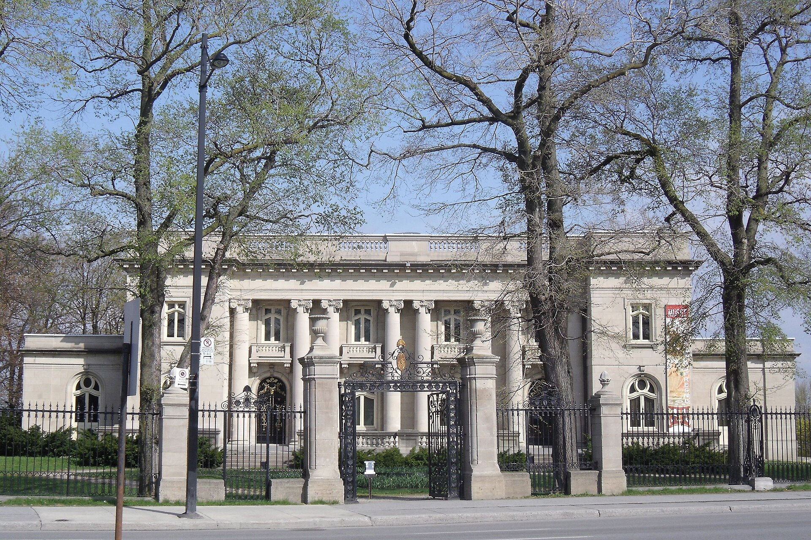
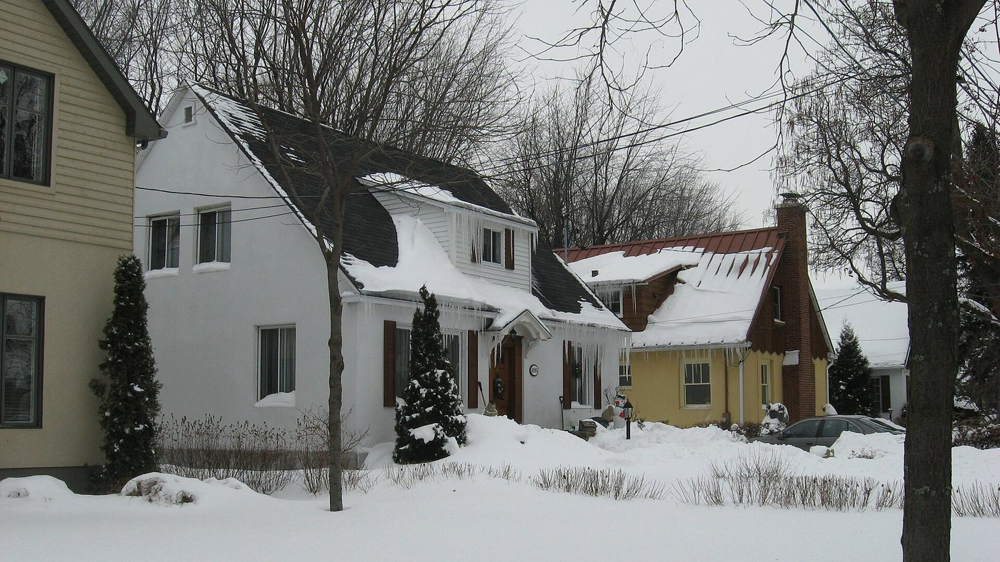

| Place | Local name | Phase years | Storeys | Roof | Window | Cladding | Garage |
|---|---|---|---|---|---|---|---|
| Mercier–Hochelaga-Maisonneuve (borough of Montréal) | Bourgeois residence of the cité, Beaux-Arts La demeure bourgeoise d'inspiration Beaux-Arts | 1883 – 1918 | 2 | flat | vertical | stone | underground |
| Rosemont–La Petite-Patrie (borough of Montréal) | Detached house of the Cité-Jardin du Tricentenaire Maison unifamiliale de la Cité-Jardin du Tricentenaire | 1940 – 1960 | 1.5 | – | vertical | clay-brick-red | none |

